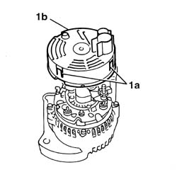
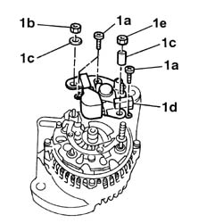
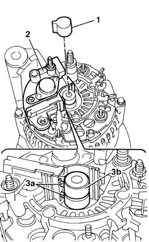
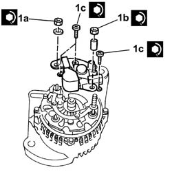
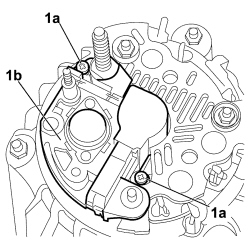
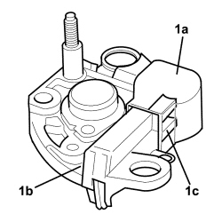

5530A24 alternator voltage regulator - r r with alternator removed
- Path
- Procedures > 55 ELECTRICAL EQUIPMENT > 5530 CURRENT GENERATOR > 5530A alternator and components > 5530A24 alternator voltage regulator - r r with alternator removed
- Kind
- repair procedure (removal / refitting; the operation number is the code)
- Applies to
- all engines; all production periods
- Interactive page
- https://sloeber94.github.io/elrnDB-fDbl/en/#/2584923
Applies to: engines: 1.2 8v, 1.6 16v, 1.3 JTD 16V, 1.9 JTD 8V, 1.9 DIESEL; all production periods
 Removing
Removing
 Refitting
Refitting1. Working with the alternator on the bench, adjust the three fixing tabs (1a), open them outwards and remove the protective cover (1b).

Applies to: engines: 1.2 8v, 1.6 16v, 1.3 JTD 16V, 1.9 JTD 8V, 1.9 DIESEL; all production periods
1. Undo the fixing bolts (1a) and nuts (1b) and (1e), recover any shims and washers (1c), then remove the voltage regulator (1d).

Applies to: engines: 1.2 8v, 1.6 16v, 1.3 JTD 16V, 1.9 JTD 8V, 1.9 DIESEL; all production periods
Refitting
RemovingClean any oil or grease from the ring. After having removed the regulator to be replaced, check that the surface of the slip rings is regular; If this is not the case, clean using extremely fine grade abrasive paper (220) or (600).
1. Remove the brush cover from the voltage regulator.
2. Move the brushes back and fit the voltage regulator in its seating.
3. Check that the blades (3a) are correctly positioned in relation to the rotor ring (3b).

Applies to: engines: 1.2 8v, 1.6 16v, 1.3 JTD 16V, 1.9 JTD 8V, 1.9 DIESEL; all production periods
Tighten the bolts and nuts, fitting the shims and washers where previously removed.
1. Tighten the nuts (1a) and (1b) and the bolts (1c) fixing the voltage regulator to torque.
 | Fastening | Component | Ø | Value (daNm) |
|---|---|---|---|---|
1a | Nut | ALTERNATOR VOLTAGE REGULATOR | - | 0.55 |
| Fastening | Component | Ø | Value (daNm) |
|---|---|---|---|---|
1b | Nut | ALTERNATOR VOLTAGE REGULATOR | - | 0.8 |
| Fastening | Component | Ø | Value (daNm) |
|---|---|---|---|---|
1c | Bolt | ALTERNATOR VOLTAGE REGULATOR | - | 0.25 |

Applies to: engines: 1.2 8v, 1.6 16v, 1.3 JTD 16V, 1.9 JTD 8V, 1.9 DIESEL; all production periods
Position the new protective brush cover.
Fit the voltage regulator protective cover, checking that the retaining tabs are correctly engaged in their housings.
Applies to: engines: 1.4 8v; all production periods
Removing
Refitting1. Prise up the cover (1a) protecting the alternator electrical components by undoing retaining clips (1b).

Applies to: engines: 1.4 8v; all production periods
1. Undo nut (1a), remove flexible washer (1b) and bush (1c).

Applies to: engines: 1.4 8v; all production periods
1. Undo the two bolts (1a) securing the voltage regulator (1b) and remove the regulator from the alternator.

Applies to: engines: 1.4 8v; all production periods
Refitting
Removing- Ensure the alternator protective cover and the alternator voltage regulator are undamaged.
- Carefully clean the field winding on the alternator.
- Remove cover (1a) protecting the brushes on voltage regulator (1b) to assist insertion of brushes (1c) into their seat on the alternator field winding.

Applies to: engines: 1.4 8v; all production periods
- Insert the voltage regulator on the alternator and secure with the two bolts.
- Fit the brush protective cover.
- Insert the bush and flexible washer on the alternator electrical connection bolt, tighten and screw on the nut.
- Fit the cover protecting the electronic part of the alternator.